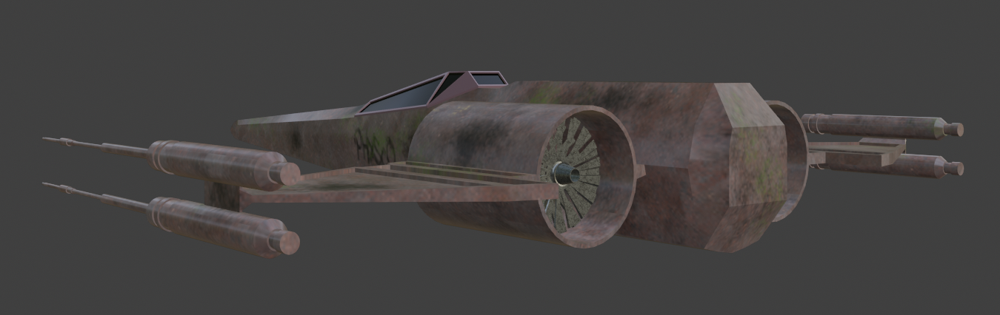

Jet
This jet was modeled in Blender and textured in Substance Painter. I aimed for an old, forgotten look... Something that’s been through battle and left abandoned for years. The model features rust, graffiti, and propeller-like engines, drawing inspiration from the futuristic X-wing while keeping a grounded, old-time aesthetic.
